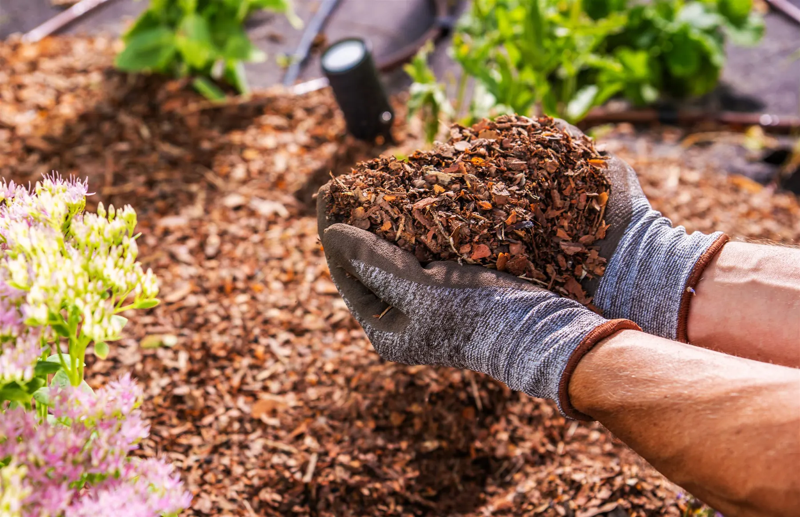

Twenty-five bags of mulch cover about 200 square feet at 3 inches deep when each bag holds 2 cubic feet, the common bagged size. The same 50 cubic feet stretches to about 300 square feet at 2 inches, or 600 square feet at 1 inch. For New Orleans beds, the LSU AgCenter sets depth by what is planted, so check the bag label and your target depth before you buy.
At Big Easy Lawn Care, we get the same question every spring and fall from homeowners across Uptown, Metairie, and the North Shore. They know the beds need mulch, but nobody knows how many bags to put in the truck.
Guessing costs money in both directions. Buy too little and you make a second trip, and buy too much and you’re storing wet bags behind the shed until they rot.
The math takes about 10 minutes once you know the steps. Contact us today to have us measure and mulch your beds for you, or follow the steps below and do it yourself.
Measure Your Beds Against What 25 Bags Hold
At the common 2 cubic foot size, 25 bags hold 50 cubic feet, which covers about 200 square feet at 3 inches deep, 300 at 2 inches, or 600 at 1 inch. Check the volume printed on the label, then walk the yard with a tape measure and a notepad to see whether 25 bags is enough.
Measure the Straight Beds First
Rectangular beds along a fence or driveway are the easy ones. Measure the length, measure the width, and multiply the two numbers together.
A bed running 20 feet along the drive at 4 feet wide gives you 80 square feet. Write that number down next to the bed name so you don’t lose track.
Handle the Curved and Round Beds
 Curved beds around a live oak or a corner planting need a different approach. Measure the widest point across the circle, halve it to get the radius, then multiply the radius by itself and again by 3.14.
Curved beds around a live oak or a corner planting need a different approach. Measure the widest point across the circle, halve it to get the radius, then multiply the radius by itself and again by 3.14.
A round bed 10 feet across has a 5 foot radius, so 5 times 5 times 3.14 gives you about 78 square feet. For irregular kidney shapes, break the bed into 2 or 3 rough rectangles and add them.
Add Every Bed Into One Total
Once every bed has a number, add them all together. That single total is what every later calculation runs on.
Keep the list, because next year you won’t have to measure again.
Photograph the notepad page when you are done. Beds get reshaped over time, and a dated photo tells you whether the numbers still hold.
Pick the Right Depth for What Is Planted
Depth is not one number for the whole yard. The LSU AgCenter sets it by what is planted: 1 inch over bedding plants and herbaceous perennials, 2 inches around shrubs, and 3 to 4 inches under trees.
| What Is Planted | Mulch Depth | Why That Depth |
|---|---|---|
| Bedding plants and herbaceous perennials | 1 inch | Shallow roots smother easily under a thick layer |
| Shrubs and foundation plantings | 2 inches | Holds moisture without trapping heat against stems |
| Trees | 3 to 4 inches | Suppresses weeds and buffers soil through summer heat |
Depth also changes how much you have to order, so settle it before you calculate. A yard mulched at 2 inches needs roughly a third less material than the same yard at 3 inches.
Getting this right matters more than the brand of mulch you buy. Set the depth bed by bed instead of spreading one number across the whole yard.
Turn Square Feet Into Cubic Yards
Mulch is sold by volume, not by area. This is the step where most homeowners get their order wrong.
Use the Coverage Rule
One cubic yard of mulch covers roughly 100 square feet at a 3 inch depth. At 2 inches that same cubic yard stretches to about 150 square feet.
So divide your total square footage by 100 for a 3 inch layer, or by 150 for a 2 inch layer. A yard with 600 square feet of beds at 3 inches needs about 6 cubic yards.
Know What a Bag Actually Holds
 Bagged mulch at the big box stores usually comes in 2 cubic foot bags. Since a cubic yard is 27 cubic feet, you need roughly 13 or 14 bags to equal one yard.
Bagged mulch at the big box stores usually comes in 2 cubic foot bags. Since a cubic yard is 27 cubic feet, you need roughly 13 or 14 bags to equal one yard.
That 600 square foot yard would take about 75 bags. At that point most homeowners switch to bulk delivery rather than loading and emptying that many bags.
Add a Margin for Settling
Fresh mulch settles within the first few weeks, and bed edges are never as clean as your tape measure suggested. Add about 10 percent to whatever number you calculated.
Running slightly over costs you a few dollars. Coming up half a bed short on a Saturday afternoon costs you another trip to the store.
When we quote mulch application for a property, that margin is already built into the number. It keeps most jobs to a single delivery.
Spread It Without Damaging the Plants
Ordering right is only half the job. How you spread the mulch decides whether it helps the bed or slowly kills what is in it.
Clear the Weeds First
Mulch suppresses new weed seed, but it won’t kill what’s already rooted. Pull or cut existing weeds before the first wheelbarrow goes down, or they push straight through.
Our weed cutting service handles this step on properties where the beds have been left for a season or two. Skipping it wastes the whole load.
Keep Mulch Off Trunks and Stems
 Piling mulch against a trunk traps moisture on bark that is built to stay dry. In our humidity that invites rot and gives insects a covered path into the tree.
Piling mulch against a trunk traps moisture on bark that is built to stay dry. In our humidity that invites rot and gives insects a covered path into the tree.
Leave a gap of a few inches of bare soil around every trunk and stem. The mulch ring should look like a doughnut, never a volcano.
Rake It Level and Check the Edges
Walk the bed after spreading and rake the surface flat. Thin spots let sunlight reach weed seed, and deep piles hold water against roots.
Check that the mulch sits below the level of any walkway or drive. A bed mounded higher than its edging washes into the street with the first hard rain.
If a load of mulch leaves debris across the drive, our clean up and hauling service clears it the same visit. Loose mulch left on concrete stains it once the rain starts.
Book the Measuring and the Mulching in One Visit
Doing the math yourself works fine on a small yard with 2 or 3 square beds. Once you have curved beds, mature trees, and a few hundred square feet to cover, the measuring and hauling stop being a Saturday project.
At Big Easy Lawn Care, we measure, source, and spread in a single visit, and we set the depth to match what is actually planted in each bed. Call us today to get your beds measured and a mulch quantity quoted for your property.
Frequently Asked Questions
How many bags of mulch do I need for 100 square feet?
For a 3 inch layer over 100 square feet you need about 1 cubic yard, which works out to roughly 13 or 14 bags at the standard 2 cubic foot bag size. At a 2 inch depth the same area takes closer to 9 bags. Check the cubic foot volume printed on the bag, because bag sizes vary by supplier.
How deep should mulch be in Louisiana?
The LSU AgCenter sets mulch depth by what is planted rather than one number for the whole yard. Use 1 inch over bedding plants and herbaceous perennials, 2 inches around shrubs, and 3 to 4 inches under trees. Going deeper than 4 inches is not healthy for most landscape plants.
How much does 1 cubic yard of mulch cover?
One cubic yard covers about 100 square feet at a 3 inch depth, or roughly 150 square feet at 2 inches. A cubic yard equals 27 cubic feet, so the shallower you spread it, the further the same volume goes. Always calculate from your measured bed area rather than estimating by eye.
When should I mulch my yard in New Orleans?
Spring and fall are the two practical windows. A spring layer goes down before summer heat arrives and helps beds hold moisture, while a fall refresh covers soil through winter rain. Many properties here get a light top-up twice a year rather than one heavy application.
What is a common mistake when applying mulch?
Volcano mulching, piling mulch high against a tree trunk or shrub stem, is one of the most common mistakes. The LSU AgCenter warns that it holds moisture against the bark and invites decay, so keep mulch 2 to 3 inches away from trunks and stems. Spreading it too deep or too thin causes problems as well.
Can you put new mulch over old mulch?
You can, as long as the existing layer has broken down and the total depth stays within the range for what is planted. Rake the old material loose first so water still reaches the soil, then top up only enough to reach your target depth. Layering year after year without checking is how beds end up 8 inches deep.
What type of mulch is best for the Gulf Coast?
Pine straw and pine bark are the two the LSU AgCenter generally recommends, and both hold up in our rainfall. Pine straw is lighter, knits together on slopes, and resists washing out, while pine bark keeps its shape longer in flat beds. Both break down and feed the soil as they age.
Is it cheaper to get mulch in bulk or bags?
It depends on how much you need. Bulk mulch is sold by the cubic yard, usually plus a delivery fee, while bags are priced individually, so compare the two by cost per cubic yard (roughly 13 or 14 bags at 2 cubic feet each). Larger orders often favor bulk once delivery is counted in.